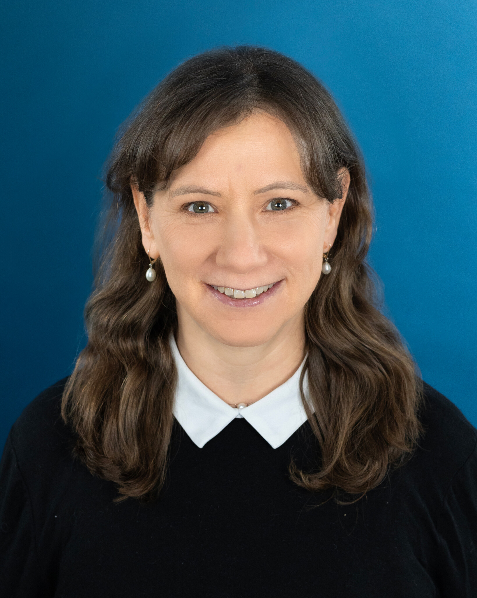

{kind=link}
Cleo Paskal
With extensive field experience across the Indo-Pacific, Ms. Paskal’s work combines ground-level knowledge and networks with strategic level applications. Her groundbreaking research on PRC political warfare operations in the Indo-Pacific has been used to shape U.S. government policies and to support the renewals of the critical Compacts of Free Association.
Ms. Paskal testified multiple times before Congress, as well before the parliaments of the United Kingdom and Canada. She regularly moderates/lectures for high-level geopolitical professional development seminars for the U.S. Military, and has taught at defense colleges in the United States, United Kingdom, India, Canada and Oman.
From 2006 to 2022, she was an Associate Fellow at Chatham House, London, where, among other responsibilities, she was research lead on the multi-year futures project ‘Perspectives on Strategic Shifts in the Indo-Pacific 2019-2024’. This included writing the research paper Indo-Pacific Strategies, Perceptions and Partnerships: The View from Seven Countries. Another component of the project involved coordinating research and planning events with think tanks in the U.S. (East-West Center D.C.), U.K. (Chatham House), France (Ifri), India (Gateway House), Tonga (Royal Oceania Institute) and Japan.
Paskal is widely published in the academic and popular press and has written for (among many others): Naval War College Review, Journal of Indo-Pacific Affairs, The Diplomat, Defense News, Military Times, Washington Times, The Telegraph, The Australian, Japan Times, The World Today and International Affairs. She is frequently quoted/interviewed by major media, including Reuters, Newsweek, New York Sun, Fox, Radio Free Asia and the John Batchelor Show. She is currently a columnist for The Sunday Guardian (India) newspaper.
Download full CV ↓